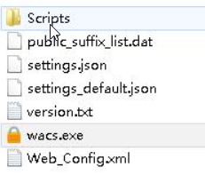
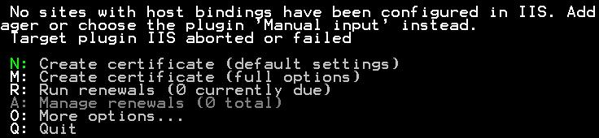
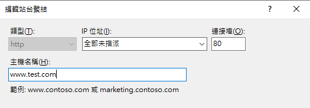
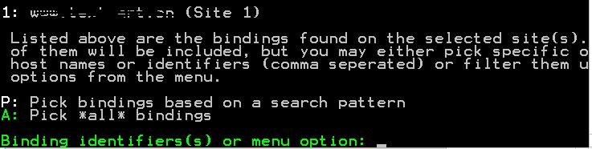
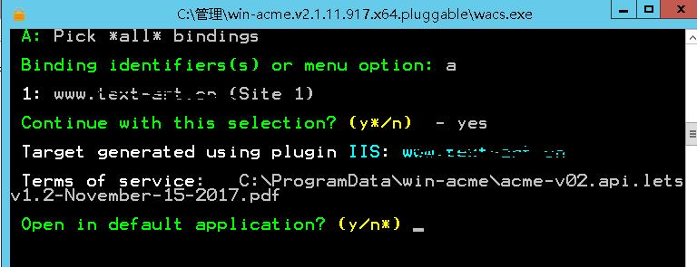
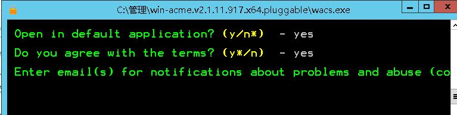
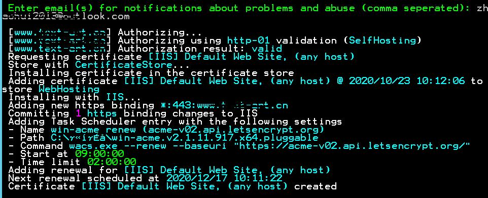

win-acme： Windows上的自動化SSL/TLS證書管理工具
win-acme: Windows 上的自動化 SSL/TLS 憑證管理工具
Windows 伺服器管理員手動維護 SSL/TLS 憑證有兩個常見問題：憑證到期忘了續、每次都要重走申請流程。win-acme 把這兩件事自動化。
什麼是 win-acme？
win-acme（Windows ACME Simple Client）是專為 Windows 設計的開源 ACME 客戶端，可從 Let's Encrypt 等相容 ACME 協定的憑證授權機構自動取得、安裝與更新 SSL/TLS 憑證。
專案網址：https://github.com/win-acme/win-acme/releases
主要功能：
- Windows 整合：原生支援 IIS、Exchange、RDP 等 Windows 服務
- 多種驗證方式：支援 HTTP-01 驗證（透過 IIS 或本地檔案系統）和 DNS-01 驗證（含萬用字元憑證）
- 插件系統：可擴充自訂驗證與安裝方式
- 自動續期：安裝完成後，win-acme 會在 Windows 工作排程器（Task Scheduler）建立排程工作，名稱為
win-acme renew (acme-v02.api.letsencrypt.org)，預設每天執行並在需要時自動續期，不需要額外設定
安裝
- 從 GitHub releases 下載最新版 ZIP 壓縮檔。
- 解壓到你選擇的目錄，例如
C:\tools\win-acme\。
解壓後的資料夾含 wacs.exe（主程式）。第一次啟動時，win-acme 會在 %PROGRAMDATA%\win-acme 建立設定目錄，憑證的更新紀錄與設定都存放在那裡。
互動式介面申請憑證（IIS HTTP-01）
以下步驟示範透過互動式介面在 IIS 上取得憑證。以系統管理員身份執行是硬性要求，每個步驟都需要。
- 以管理員身份執行
wacs.exe。
- 選擇
N建立新憑證。
- 若出現
No sites with host binding have been configured in IIS，表示 IIS 網站還沒有設定主機標頭繫結。先到 IIS 管理員補設繫結，再重新執行 wacs.exe。
- 再次建立憑證，選擇偵測到的預設網站，按
1。
- 確認列出的預設網站繫結。

- 繼續選擇
Y。
- 確認服務條款（Terms of Service），選
Y；接著輸入聯絡信箱（用於接收 Let's Encrypt 到期通知）。
- 選擇
Y同意，輸入信箱。
- 完成後顯示憑證資訊，包括有效期限與網站繫結。

- IIS 會在 443 埠自動繫結憑證。
命令列申請（進階）
互動式介面適合初次設定，命令列適合批次或 CI 環境。以下範例以 HTTP 檔案驗證申請憑證並直接安裝到 IIS：
1 | wacs.exe --source manual --host example.com --validation filesystem --webroot C:\inetpub\wwwroot --installation iis --installationsiteid 1 |
--source manual：手動指定域名--validation filesystem：HTTP-01 驗證，把驗證檔放到--webroot指定的目錄--installation iis --installationsiteid <站台ID>：安裝到指定的 IIS 站台（ID 可從 IIS 管理員查詢）
若只想驗證不安裝（例如只要拿到憑證檔自行處理），省略 --installation 的部分即可，憑證輸出格式為 .pfx 或 .pem。
DNS-01 驗證（需要萬用字元憑證 *.example.com 時使用）需另外搭配 DNS 插件，詳見官方文件。
適用場景
- IIS 網站：最常見的用途，自動取得並繫結憑證
- Exchange 伺服器：為郵件傳輸設定憑證
- 遠端桌面服務（RDP）：強化遠端連線的憑證驗證
- 其他 Windows 服務：FTP、SMTP 等需要 TLS 的服務
注意事項
- 確認排程已建立：完成後在「工作排程器」搜尋
win-acme，確認工作存在且下次執行時間正常，這樣才算真的啟用了自動續期。 - 防火牆：HTTP-01 驗證需要 80 埠對外可達；DNS-01 驗證則不需要。
- 備份：第一次使用前先備份現有 SSL 設定。
- 權限：wacs.exe 需要系統管理員權限才能修改 IIS 設定和系統憑證存放區。